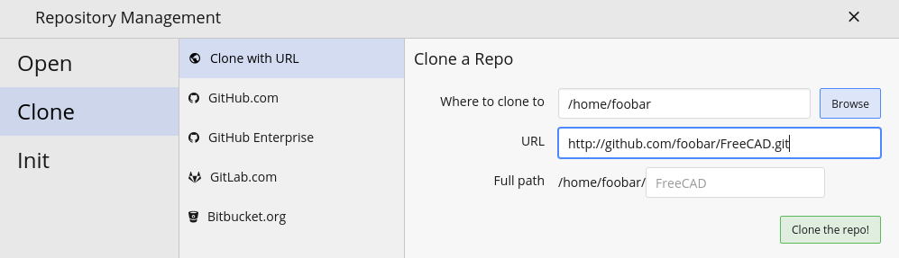
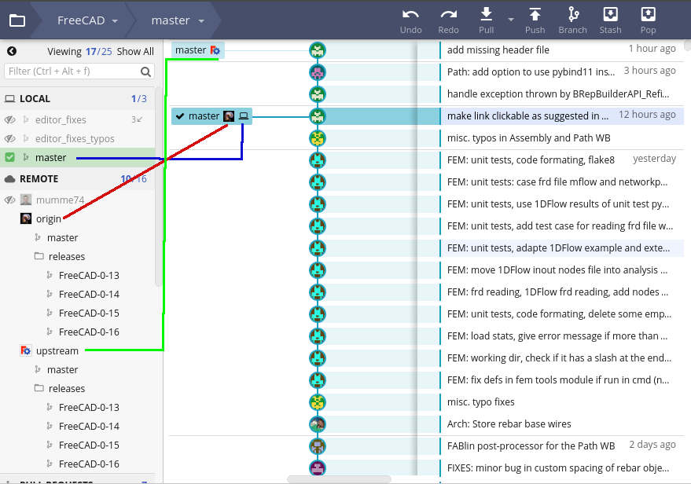
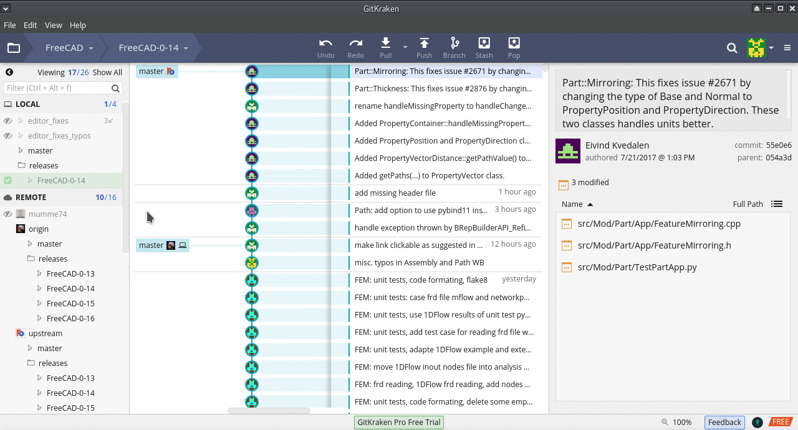
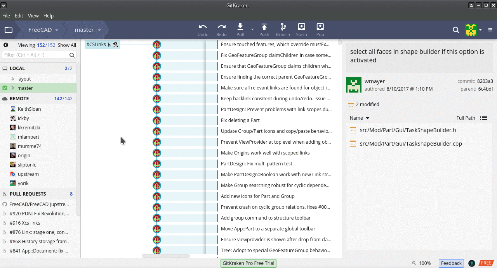

Please Read
This guide is not written to teach users how to use git in it's totality, far from it. git is super handy tool with a lot of functionality that goes way beyond the scope of this intro. This is just a cursory introduction highlighting on how to work with git in a GUI environment. It also serves as a means to enourage FreeCAD users to contribute to FreeCAD. This tutorial uses GitKraken, proprietary software that is free to use for non-commercial use.
Setup git Development
- Download GitKraken (There are different ways to download GitKraken depending on your OS. I use an Arch Linux based distro called Manjaro and added it through my package manager)
- In your web browser go to: https://github.com/FreeCAD/FreeCAD
- Click the Fork button. This will clone the FreeCAD/FreeCAD repo to your own account. In other words the URL to access your fork of FreeCAD is:
https://github.com/GITUBUSERNAME/FreeCAD.git
- Open GitKraken and go to File > Clone Repo

- GitKraken will now git clone your repository
- Now an important point: Please read the different between origin vs. upstream remote repos. Essentially your fork of FreeCAD is the origin repo. The official FreeCAD git repo FreeCAD/FreeCAD is your upstream. You now need to set the upstream repo as FreeCAD.
- Go to File > Open Terminal
- Enter the following to set up your upstream remote repo
git remote add upstream https://github.com/YOURGITUHUBUSERNAME/FreeCAD.git
- Now check what remote branches you have set by typing:
git remote -v
- You should see something like this in the terminal:
originhttps://github.com/foobar/FreeCAD (fetch)
originhttps://github.com/foobar/FreeCAD (push)
upstreamhttps://github.com/FreeCAD/FreeCAD.git (fetch)
upstreamhttps://github.com/FreeCAD/FreeCAD.git (push)
- Switch back to GitKraken interface.
- On the left side of the screen you will see a sidebar with a section labled Local double click on the master branch (this will make sure you're on the master branch AKA
git checkout master
- Click on the Push] icon on the top right side of the interface. This will push your Local master to your Remote origin master
Deciphering the GitKraken Interface
For more in-depth understanding of the GitKraken interface checkout the Getting Started Guide.
- Orientation:
- Local = local machine
- Local master = your local copy FreeCAD <= symbolized as Blue in Screenshot)
- Remote = Remote GitHub repos
- Remote Upstream = Official FreeCAD repo (AKA FreeCAD/FreeCAD) <= Symbolized as Green in Screenshot
- Remote Origin = Fork of FreeCAD/FreeCAD (should look something like: github.com/YourGitHubUsername/FreeCAD) <= Symbolized as Red in Screenshot

Notice
That both remote origin master and local master are a few commits behind upstream in the above screenshot. You can remedy this by Rebasing
Rebasing
- Checkout the Local Master branch by double clicking on it (this is the equivalent of typing git branch master in the terminal)
- Move the mouse to the where latest Upstream commit is, right click mouse and choose Rebase master on upstream/master (this will pull down the Upstream changes in to your Local master)
- Move the mouse and press the Push button. GitKraken (This pushes from your 'Local master' to 'Remote Origin master')
Now all your repos are in sync!

Branches
Resolving Merge Conflicts
Notice
GitKraken has a special merge conflict tool that is only accessible in the GitKraken Pro version. But there are workarounds to use external git merge 3rd party tools
Squashing Commits
Squashing is when you have several commits you want to condense down in to one commit. From the GitKraken manual:
Squashing is available for commits that meet the following requirements:
Selection contains more than one commit
The youngest commit (by commit date) is also the current HEAD commit
Genealogically consecutive
Chronologically consecutive
The oldest commit in the list has a parent
If all these conditions are met, the Squash option appears when you right click the commit node.
See screencast at: https://support.gitkraken.com/img/documentation/working-with-files/commits/squash.gif
Follow Other FreeCADers Branches
Remotes are forked repositories of FreeCAD/FreeCAD by fellow FreeCADers. You can use Gitkraken to follow how FreeCAD devs code and commit to their own branches before they send git Pull Requests to the main FC repo.
Here is how you can follow other users:
- In the left side panel there is a Remotes category. Press the +
- A dialogue will come up that can give you the option to choose which remote you want to follow. Recommended remotes are: wmayer, yorikvanhavre, ickby, sliptonic, kkremitzki etc....
- Choose 'Add Remote'
Whenever new commits are made or branches are rebased by said user you will see it represented in the gui.

{kind=link}
{kind=link}
{kind=link}
{kind=link}
{kind=link}